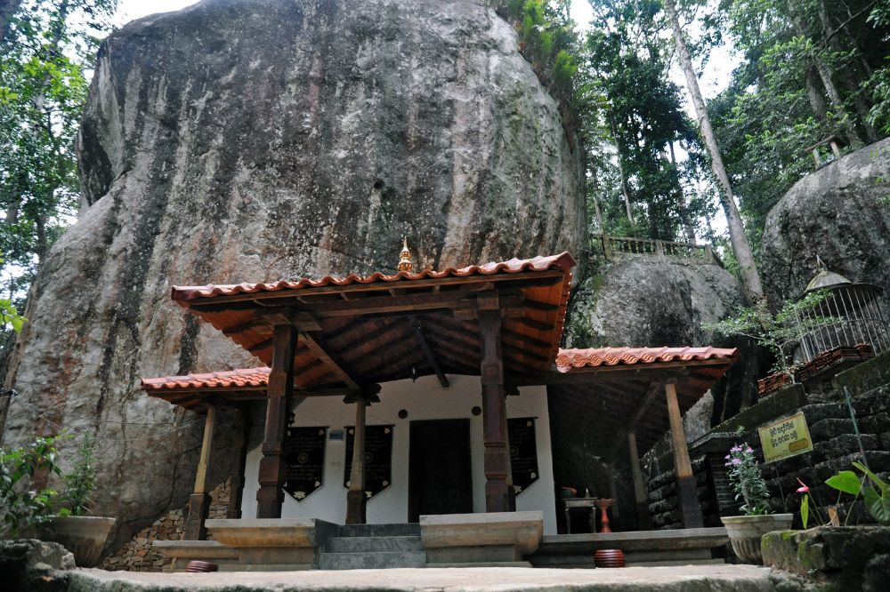

03 · Gallery
Scenes from Avissawella
Illustrated impressions of the village's landmarks and landscape — click any tile to view it larger.

Kumari Ella Falls (6.9871° N, 80.2412° E)[cite: 1]

Aranya Senasanaya Temple (6.9531° N, 80.2087° E)[cite: 1]

Wet Zone Botanic Garden (6.9308° N, 80.1974° E)[cite: 1]

Ranmuthugala Hill at Sunrise (6.9625° N, 80.1889° E)[cite: 1]

Avissawella Railway Station (6.9542° N, 80.2077° E)[cite: 1]

The Kelani River (6.9553° N, 80.2044° E)[cite: 1]